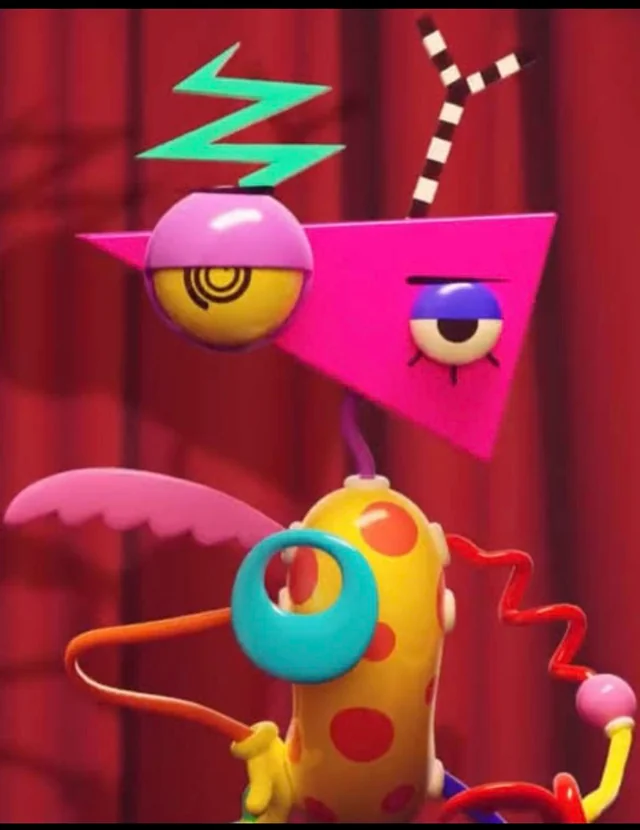

En esta Pagina de prueba, se contara un poco
sobre los personajes de digital circus y un poco de
sus personalidades que los hace especiales y amados por
el public de glitch productions


Pomni
Una bufona con problemas de
crisis existenciales es la protagonista
y siempre trata de encontrar la salida del
circo digital